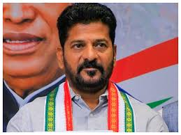
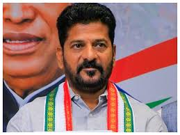

sports
cricket today
Rohit Sharma shatters 73-year-old record in Rajkot, becomes oldest India captain to hit century
sports
Rohit Sharma shatters 73-year-old record in Rajkot, becomes oldest India captain to hit century

Entertainment
Apple Vision Pro is a mixed-reality headset developed by Apple Inc. It was announced on June 5, 2023, at Apple's Worldwide Developers Conference, and pre-orders began on January 19, 2024. It became available for purchase on February 2, 2024, in the United States.[10] A worldwide launch has yet to be scheduled. The Vision Pro is Apple's first new major product category since the release of the Apple Watch in 2015.[11]
Sports
ANMOL KHARB loves a good one-liner, and doesn’t particularly care about traditional festivals if they come in the way of her badminton practice. On Diwali, she demanded to know from coach Kusum Singh why she couldn’t pack in a morning training session when all the revelry and fireworks happen in the evening. And on Rakshabandhan, she coolly declared, “I’ll protect myself. I don’t need rakhi.”
Technology
Talking to an AI chatbot can feel a bit like Groundhog Day after a while, as you tell it for the umpteenth time how you like your emails formatted and which of those “fun things to do this weekend” you’ve already done six times. OpenAI is trying to fix that and personalize its own bot in a big way. It’s rolling out “memory” for ChatGPT, which will allow the bot to remember information about you and your conversations over time.
political
Anumula Revanth Reddy (born 8 November 1969) is an Indian politician who is serving as the second and current Chief Minister of Telangana since 7 December 2023.[α][2] He represents Kodangal constituency in the Telangana Legislative assembly. He belongs to the Indian National Congress (INC).
 

Telangana
He led the Congress' successful campaigning against the incumbent Chief Minister K. Chandrashekar Rao in 2023 Telangana Legislative Assembly election with the party winning 64 seats, 4 seats past the majority mark. He contested from Kodangal and Kamareddy constituencies,[19][20] winning in the former seat and losing in the latter.[21] After his earlier wins from Kodangal constituency in 2009 and 2014, he is representing the constituency for the third time.